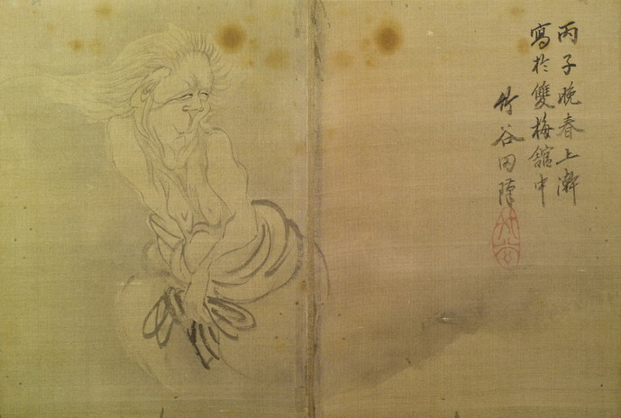

額は禿げ上がり、ざんばら髪が後ろになびいている。耳は大きく、顎が長い。上半身は裸で、腰のあたりに着物がまとわりついている。片手で紐を持っている。下半身は描かれておらず、宙に浮いているように見える。
著作者：竹谷田障／出典：親書誌：U426_nichibunken_0155：東都画家妖怪画帖；トウトガカヨウカイガチョウ／日付：2010／資源識別子：U426_nichibunken_0155_0005_0000
Copyright (c)2010- International Research Center for Japanese Studies, Kyoto, Japan. All rights reserved.